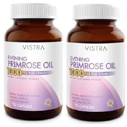

Evening Primrose Oil

Evening Primrose Oil ဟာ သမပိုင်း၌ နွေဦးရာသီမှာ အဝါဖျော့ဖျော့အပွင့်တွေ ပွင့်လေ့ရှိပြီး အလေ့ကျပေါက်ပန်း ပင်တစ်မျိုးမှ ရရှိတဲ့ အဆီ ဖြစ်ပါတယ်။ သဘာဝအဆီတစ်မျိုး ဖြစ်ပြီး ဆေးအနေနဲ့လည်း ထုတ်လုပ် အသုံးပြုပါတယ်။
ဘယ်မှာသုံးလဲ
Evening Primrose Oil ကို ဓမ္မတာလာတဲ့အခါ ရင်သား နာကြင်တာကို သက်သာစေဖို့အတွက် သုံးပါတယ်။
ဒါပေမယ့် ကင်ဆာရောဂါကို ကာကွယ်ဖို့နဲ့ ကုသတဲ့နေရာမှာတော့ အသုံးမပြုပါဘူး။
ဘယ်လိုသုံးရမလဲ
- သောက်ဆေး အမျိုးအစား ဖြစ်ပါတယ်။
- ဆေးအညွှန်း စာရွက်မှာ ညွှန်းကြားထားတဲ့အတိုင်း သောက်သုံးသင့်ပါတယ်။
- သောက်သုံးနေစဉ်အတွင်း ရောဂါ လက္ခဏာ မသက်သာဘဲ ပိုမို ဆိုးရွားပါက ဆရာဝန်နဲ့ ပြသဖို့ လိုအပ်ပါတယ်။
ဘေးထွက်ဆိုးကျိုးဘာတွေရှိလဲ
- ဗိုက်အောင့်ခြင်း
- ပျို့ခြင်း အန်ခြင်း
- ဝမ်းပျော့ခြင်း
- ခေါင်းကိုက်ခြင်းတို့ ဖြစ်တတ်ပါတယ်။
- ဆိုးဆိုးရွားရွား ဓာတ်မတည့်တာတွေတော့ ဖြစ်ခဲပါတယ်။
ဘာတွေသတိထားရမလဲ
- သွေးယိုစိမ့်လွယ်ခြင်းနဲ့ သွေးမတိတ်ခြင်း ပြသနာတွေ ရှိပါက ဆရာဝန်နဲ့ ဆွေးနွေးဖို့ လိုပါတယ်။
- အရက်စွဲနေခြင်း ဆီးချို ရောဂါနှင့် အသည်းရောဂါ များရှိပါက ဆရာဝန် ညွှန်ကြားချက်နှင့်သာ သောက်သုံးပါ။
- ကိုယ်ဝန်ဆောင်များတွင် သောက်သုံးရန် မသင့်ပါ။ လိုအပ်ပါက ဆရာဝန်နှင့် တိုင်ပင်ဆွေးနွေးပါ။
- နို့တိုက်မိခင်များဟာ ဆရာဝန် ညွှန်ကြားချက်နှင့်သာ သောက်သုံးရပါမယ်။
ဆေးအာနိသင်ဘယ်လိုရှိလဲ?
- သွေးကျဲဆေးများ (Warfarin, Heparin, Clopidogrel) နှင့် Aspirin ကဲ့သို့သော NSAID အုပ်စုဝင် အကိုက်အခဲပျောက်ဆေးများနှင့် Evening Primrose Oil ကို တွဲမသောက်သင့်ပါ။ သွေးယိုစိမ့်ခြင်းကို ဖြစ်နိုင်သောကြောင့် ဖြစ်ပါတယ်။
- ဒါ့အပြင် Evening Primrose Oil ကို သောက်ထားပါက ဓာတ်ခွဲခန်း သွေးစစ်ခြင်း (Bleeding Time, Cholesterol Levels) အဖြေများကို မှားနိုင်ပါတယ်။
ဆေးသောက်လွန်ရင် ဘာတွေဖြစ်မလဲ
ဘေးထွက်ဆိုးကျိုး လက္ခဏာများ ဆိုးရွားပါက သို့မဟုတ် အသက်ရှူရခက်ပါက အဆိပ်ကုဌာနသို့ အမြန်ဆုံးသွားရန် လိုပါတယ်။
- ဆေးတွေကို ဘယ်ဆေးမဆို ဆရာဝန် ဒါမှမဟုတ် တတ်ကျွမ်းနားလည်တဲ့ ကျန်းမာရေးဝန်ထမ်းတွေရဲ့ ညွှန်ကြားချက်အတိုင်း တိတိကျကျ သောက်သင့်ပါတယ်။
- မိမိသဘောနဲ့ဆေးရပ်လိုက်တာမျိုး မလုပ်သင့်ပါဘူး။
- ဘေးထွက်ဆိုးကျိုး ပြင်းပြင်းထန်ထန် ခံစားရရင်တော့ ဆရာဝန်နဲ့တိုင်ပင်ဖို့ လိုအပ်ပါတယ်။
Source– ဒေါက်တာချစ်စန္ဒီကျော်